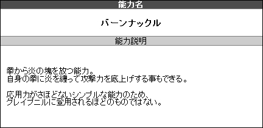
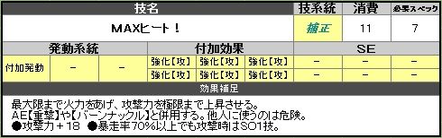
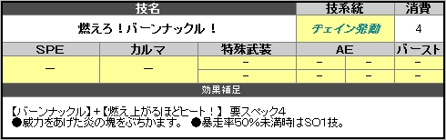
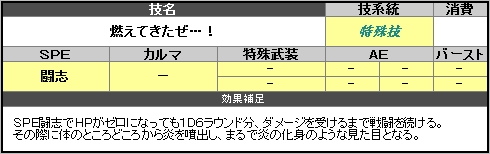

能力を自由に決定します。
当ＴＲＰＧでは能力がリスト化されておりません。
①能力を決定する
②応用技を作成
という手順で自由に能力を作成しましょう。
①どんな能力かを決定する
炎を出す、電気を操るなどの自身の能力を自由に設定・作成します。
能力タイプに沿った能力で作成して下さい。
どんな能力か最低限の説明は作成しましょう。
又、能力はあくまで自身のものなので
能力と同等の機能を持つ武器・装備の作成は不可となります。
※その様な装備があると誰でも能力者相当になれてしまう為。
▼【特殊ケース】 能力兵装について
身体タイプでロボットやアンドロイドを選んだ方は
あくまで内蔵・搭載されている事を前提で能力扱いとなる兵装を作成する事は可能です。
便利すぎる設定やあまりにオーバーテクノロジーになっていないかだけご注意下さい。
受け渡しできるようなものはＮＧです。
身体タイプでロボットやアンドロイドを選んだ方は
あくまで内蔵・搭載されている事を前提で能力扱いとなる兵装を作成する事は可能です。
便利すぎる設定やあまりにオーバーテクノロジーになっていないかだけご注意下さい。
受け渡しできるようなものはＮＧです。
▼作成例
●能力名【 燃えさかる拳 －バーンナックル－ 】
●能力説明：拳から炎の塊を放つ
●能力名【 燃えさかる拳 －バーンナックル－ 】
●能力説明：拳から炎の塊を放つ

▼能力作成の補足
●アンチ能力は不可。
●能力そのものはあくまで１つのみ。
※能力を元に様々な技に応用するというのが当ＴＲＰＧの運用です。
●科学による能力の再現は特殊武装が相当する。
●身の丈に合わない能力作成は自重しましょう。
人間の限界というものは存在しています。
あくまで応用技の作成ルール内で再現できるものにしましょう。
▼世界観に沿った能力を作成しましょう。
ユグドラＴＲＰＧはＳＦＴＲＰＧでもあります。
魔法や異世界、幽霊、悪魔、天使といったものはいませんし、ありません。
もしかしたら存在してるかもしれませんが、存在証明はされておりません。
炎を魔法のように操るといったことや、
悪魔のようなクリーチャーを作る、などはＯＫですが、
あくまで近未来ＳＦが世界観のベースとして
世界観を守るために異世界系やらファンタジー要素は自重下さい。
▼クリエイター諸注意
特定のものを具現化・物質化をするのは問題ないですが、
不特定多数の具現化・物質化を行う能力はＧＭ裁量や場合によっては
技能ロールなどにて判定成功しないと生成不可などの制限をして下さい。
※判定項目・目標値はＧＭ裁量。
例１）イメージを具現化する
例２）原子レベルで様々な物質化を行う など
自由に色々な事ができるのがＴＲＰＧですが、
「なんでもできる」のは当ＴＲＰＧが望む形ではありません。
クリエイターは他能力に比べ自由度がより高い為、各自でご自重下さい。
「なんでもできる」のは当ＴＲＰＧが望む形ではありません。
クリエイターは他能力に比べ自由度がより高い為、各自でご自重下さい。
▼他者変化について
変身能力や他者を別のなにかに変化させる強制力を伴う能力は運用にご注意下さい。
他者ＰＬに変化を強いるような行動は問題を起こす場合があります。
基本的に意志ある者への変化はある程度耐性が働き、
変化を起こせたとしても一時的なものになると思って下さい。
世界観としてはパラメーターの【耐久】【精神】が高ければ高いほど、
そういった変化能力に耐性があると思って頂いて結構です。
ただしフレーバー範囲の無機物の変化や、
モブＮＰＣを永続的に変化・影響を与えるといった事は世界観的にありです。
②応用技を作成する
決定した能力でどんな事ができるかを考え、応用技を作成します。
応用技の構成は
●【 発動系統 】
●【 発動系統 】＋【 ＳＥ 】
●【 発動系統 】＋【 付加効果 】
●【 発動系統 】＋【 付加効果 】＋【 ＳＥ 】
というパターンの組合せになります。
発動系統を複数組み込む事もＯＫです。
能力応用技は最大８個まで作成できます。
※クリーチャーの応用技は最大５個まで。
●【 発動系統 】
●【 発動系統 】＋【 ＳＥ 】
●【 発動系統 】＋【 付加効果 】
●【 発動系統 】＋【 付加効果 】＋【 ＳＥ 】
というパターンの組合せになります。
発動系統を複数組み込む事もＯＫです。
能力応用技は最大８個まで作成できます。
※クリーチャーの応用技は最大５個まで。
以下の手順で応用技を作成できます。
様々な組合せを自由な発想で、能力に当てこんで作成して下さい。
▼
▼
▼
▼
それぞれの【発動系統】【付加効果】【ＳＥ】には
必要スペックと消費ＰＰが設定されています。
組み合わせた合計から
その技の必要スペックと消費ＰＰが決定します。
スペックを超えた【 ＳＯ発動 】や
複数技を組み合わせる【 チェイン発動 】もあります。
▼例 ※サンプルキャラは覚醒型の発動スペック【３】
必要スペックと消費ＰＰが設定されています。
組み合わせた合計から
その技の必要スペックと消費ＰＰが決定します。
スペックを超えた【 ＳＯ発動 】や
複数技を組み合わせる【 チェイン発動 】もあります。
▼例 ※サンプルキャラは覚醒型の発動スペック【３】


▼技の効果対象の考え方
技の対象にできるのは
●自分
●味方
●敵
上記の単一の効果対象に加え
●自分＆他対象 があります。
あくまで１行動相当のもので作成が必要です。
【 自分＆他対象 】というものは
自分を強化して攻撃する、等が該当します。
組み合わせパターンの詳細は
【 応用技の効果対象について 】を参照。
●演出技であれば８技以外に特殊技として作成可能です。
●その他、ＳＰＥやＡＥ、カルマなどを特殊技として演出する事はＯＫです。
●自分
●味方
●敵
上記の単一の効果対象に加え
●自分＆他対象 があります。
あくまで１行動相当のもので作成が必要です。
【 自分＆他対象 】というものは
自分を強化して攻撃する、等が該当します。
組み合わせパターンの詳細は
【 応用技の効果対象について 】を参照。
▼フレーバー応用技
●演出技であれば８技以外に特殊技として作成可能です。
●その他、ＳＰＥやＡＥ、カルマなどを特殊技として演出する事はＯＫです。

特殊武装の名称を変えたり、
チェイン発動の技組合せに名称をつけたりなど、
ご自由にカスタマイズして下さい。